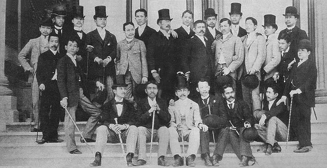

.
.
.
The influx of liberal ideas (from abroad), the Spanish Revolution 1868, or the opening of the Suez Canal 1869. The martyrdom of Fathers Gomez, Burgos, and Zamora.
It began in 1872, when Fathers Mariano Gomez, Jose Burgos, and Jacinto Zamora were executed at Luneta.
.
Rizal moved from his hometown of Calamba to Manila for his secondary education at the Ateneo Municipal de Manila and later attended the University of Santo Tomas for his medical studies.
Rizal left the Philippines in May 1882 to further his studies in Europe. He traveled from Manila to Singapore, then on to Colombo, Suez, Naples, and finally Barcelona.
Rizal studied medicine at the Universidad Central de Madrid. During his time in Spain, he joined the Propaganda Movement, a group of Filipino expatriates advocating for political and social reforms in the Philippines. He wrote extensively for "La Solidaridad," a newspaper central to the movement, and began work on his novel "Noli Me Tangere."
Rizal continued his studies in Paris and Heidelberg. In Paris, he worked at the ophthalmic clinic of Dr. Louis de Wecker. He then moved to Heidelberg, Germany, where he completed his ophthalmology training under Dr. Otto Becker. He also spent time in other German cities like Leipzig and Berlin, where he published "Noli Me Tangere."
Rizal returned to the Philippines in August 1887. His novel "Noli Me Tangere" had caused a stir among the Spanish authorities, leading to his implication in the growing unrest.
After a brief stay in the Philippines, Rizal left again for Europe in February 1888, via Hong Kong and Japan.
Rizal stayed in Japan for a month, where he developed a romantic relationship with Seiko Usui (O-Sei-San).
He traveled to the United States, visiting San Francisco, Sacramento, and New York before sailing to Liverpool, England.
Rizal spent time in London, conducting research at the British Museum and meeting fellow Filipinos. He annotated Antonio de Morga's "Sucesos de las Islas Filipinas" to highlight pre-colonial Filipino culture.
Rizal moved to Paris and then to Brussels, where he finished his second novel, "El Filibusterismo," and continued his work with the Propaganda Movement, writing for "La Solidaridad."
Rizal returned to Madrid in August 1890 to support the Propaganda Movement, despite growing frustrations over the lack of progress and internal conflicts among the propagandists.
Rizal moved to Hong Kong and established a medical practice. He continued to support the Propaganda Movement and planned the creation of La Liga Filipina, an organization aimed at peaceful reform. His family joined him there after their eviction from Calamba.
Rizal briefly visited Japan again during this period.
Rizal returned to the Philippines in June 1892 and founded La Liga Filipina. The organization sought to unite Filipinos for peaceful reform. He was soon arrested and exiled to Dapitan in Mindanao.
Rizal spent four years in Dapitan, where he practiced medicine, conducted scientific research, and engaged in community projects.
Rizal volunteered to serve as a doctor for the Spanish army in Cuba. He left Dapitan for Manila and boarded a ship to Spain. However, he was arrested en route in Barcelona and sent back to Manila to face trial.
Rizal returned to Manila and was imprisoned at Fort Santiago. He was tried and sentenced to death.
Rizal was executed on December 30, 1896, at Bagumbayan (now Luneta Park) in Manila. His extensive travels and involvement in the Propaganda Movement were instrumental in spreading his ideas and rallying support for the Filipino cause. His writings, particularly "Noli Me Tangere" and "El Filibusterismo," and his contributions to "La Solidaridad," played a crucial role in awakening Filipino nationalism and laying the groundwork for future revolutionary movements.